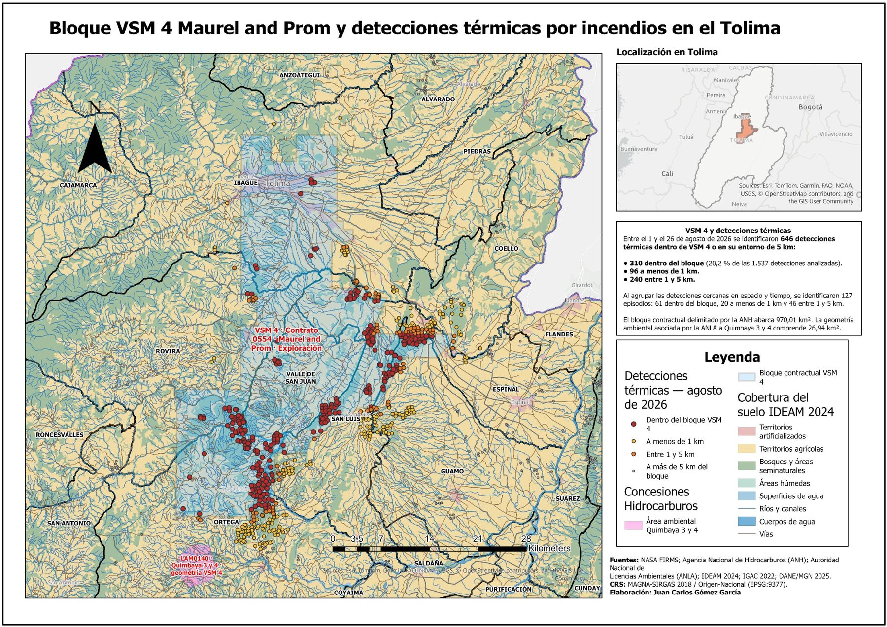

Atlas analítico · Tolima · agosto de 2026
Detecciones térmicas y zonas de posible intervención extractiva
Durante agosto de 2026 se identificaron 409 episodios térmicos en Tolima. Los mapas muestran dónde aparecen estas señales y cómo coinciden con áreas registradas oficialmente para minería, licenciamiento ambiental e hidrocarburos. Puede ampliar cada mapa para recorrer el departamento en máxima resolución; los capítulos reúnen los gráficos, tablas y análisis detallados.
Lo principal, de un vistazo
De los 409 episodios analizados, 31 % coincidió con áreas ANM, 35 % con áreas ANLA y 46 % con áreas ANH. En los tres casos, la proporción de episodios dentro de estas zonas fue mayor que la proporción del territorio que ocupan.

Agencia Nacional de Minería
Títulos y solicitudes mineras
En el registro de la Agencia Nacional de Minería, 127 de los 409 episodios (31,05 %) coincidieron con títulos o solicitudes mineras. Estas áreas ocupan 18,63 % del territorio evaluado.
- Episodios que coinciden
- 127
- % de episodios
- 31,05 %
- % del territorio
- 18,63 %
- Concentración relativa
- 1,666 ×
 Ampliar mapa
Ampliar mapa
Abrir capítulo analítico ANM →
Ver gráficos complementarios ANM


Autoridad Nacional de Licencias Ambientales
Licenciamiento y seguimiento ambiental
En las áreas registradas por la Autoridad Nacional de Licencias Ambientales, coincidieron 143 de los 409 episodios (34,96 %). Estas áreas representan 15,10 % del territorio evaluado.
- Episodios que coinciden
- 143
- % de episodios
- 34,96 %
- % del territorio
- 15,10 %
- Concentración relativa
- 2,315 ×
 Ampliar mapa
Ampliar mapa
Abrir capítulo analítico ANLA →
Ver gráficos complementarios ANLA


Agencia Nacional de Hidrocarburos
Tierras contractuales, yacimientos y pozos
En las áreas de hidrocarburos consideradas para el análisis coincidieron 187 de los 409 episodios (45,72 %). Estas áreas ocupan 21,93 % del territorio evaluado.
- Episodios que coinciden
- 187
- % de episodios
- 45,72 %
- % del territorio
- 21,93 %
- Concentración relativa
- 2,085 ×
 Ampliar mapa
Ampliar mapa
Caso destacado · ANH
VSM4 – Maurel & Prom
Entre las áreas contractuales analizadas por la ANH, el bloque VSM4 — contrato 0554 Maurel & Prom concentra el mayor número de detecciones térmicas dentro del bloque y en su entorno inmediato. Entre el 1 y el 26 de agosto se registraron 646 detecciones dentro del bloque o a menos de 5 km; al agruparlas en espacio y tiempo corresponden a 127 episodios, de los cuales 61 se localizaron dentro del bloque.

Ampliar mapa{kind=link}
Abrir capítulo analítico ANH →
Ver gráficos complementarios ANH


¿Qué significan las coincidencias y las cifras?
Si quiere ir más allá de los mapas, estas definiciones explican de manera sencilla cómo se construyeron los resultados y qué significa cada concepto.
Detección térmica (foco de calor)
Es un punto donde un satélite detectó una temperatura o señal térmica anómala. Puede corresponder a fuego, pero no equivale por sí sola a un incendio confirmado.
Episodio térmico
Es un grupo de una o más detecciones cercanas entre sí. Aquí se agrupan señales separadas por no más de 1 km y 12 horas para evitar contar varias observaciones del mismo fenómeno como eventos distintos.
Área institucional
Es el conjunto de zonas que aparece en los registros oficiales utilizados: por ejemplo, títulos y solicitudes mineras, áreas ANLA o tierras contractuales ANH.
Coincidencia directa
Ocurre cuando al menos una detección de un episodio cae dentro de una de esas áreas en el mapa. Es una coincidencia de ubicación.
Proximidad
Cuando el episodio queda por fuera del área, se mide qué tan lejos está: hasta 1 km, entre 1 y 5 km o a más de 5 km.
Superficie y valor esperado
La superficie indica qué porcentaje del territorio ocupa cada conjunto de áreas. El valor esperado pregunta: “si los episodios se repartieran solo en proporción al tamaño de esas áreas, ¿cuántos esperaríamos encontrar dentro?”. Es una referencia descriptiva, no una predicción de incendios.
Concentración relativa (índice de enriquecimiento)
Compara el porcentaje de episodios observado con el porcentaje de territorio ocupado. Un valor de 1 indica proporciones parecidas; 2 significa que la proporción de episodios es aproximadamente el doble de la proporción territorial.
Escenarios A y B
B es el análisis principal y excluye observaciones Suomi-NPP posteriores a una advertencia de calidad de NASA. A incluye todos los sensores y se usa como control: si A y B se parecen, el resultado cambia poco al tomar esa decisión.
Recurrencia
Describe un lugar donde las señales térmicas se repitieron en varias fechas durante el mes. “Recurrente” significa repetición de la señal, no incendio repetido ni una fuente de origen conocida.
Cobertura de la tierra
Describe el tipo de superficie cartografiada, por ejemplo arroz, pastos, bosque o zona urbana. Sirve para conocer el contexto del lugar, pero no explica por sí sola por qué apareció una señal térmica.
Punto, línea y polígono
Son formas de representar elementos en un mapa. Un pozo puede ser un punto, un ducto una línea y un área contractual un polígono. Por eso no todos se comparan de la misma manera.
Superposición o solapamiento
Ocurre cuando dos áreas ocupan parte del mismo espacio. Un episodio puede quedar dentro de ambas; por eso algunos conteos no deben sumarse como si fueran casos diferentes.
De una detección satelital a un episodio espacial
NASA FIRMS distribuye detecciones satelitales de fuego activo y anomalías térmicas —puntos donde los sensores registran una señal de calor inusual— derivadas de MODIS y VIIRS [1]. Aquí se agrupan y comparan con conjuntos de áreas institucionales; no se convierten automáticamente en incendios ni en áreas quemadas.
- 01
Observación
Detecciones térmicas (hotspots) FIRMS de agosto de 2026. El escenario B excluye 597 observaciones VIIRS Suomi-NPP porque NASA FIRMS advierte que los datos recibidos desde ese satélite después del 9 de marzo de 2026 pueden no cumplir las especificaciones de misión debido a una anomalía. El escenario A conserva todos los sensores como análisis de sensibilidad; la exclusión no implica una invalidación general de VIIRS Suomi-NPP.
- 02
Agrupación
Las detecciones cercanas se reúnen en episodios: si varias señales aparecen dentro de 1.000 metros y una ventana de 12 horas, se tratan como parte de un mismo episodio térmico. El escenario principal contiene 409 episodios.
- 03
Relación espacial
Se llama coincidencia directa cuando al menos una detección cae dentro del área institucional. Si queda por fuera, se mide la distancia mínima: hasta 1 km, entre 1 y 5 km o a más de 5 km.
- 04
Control territorial
Para las áreas dibujadas como polígonos se tiene en cuenta cuánto territorio ocupan, de modo que un conjunto de áreas muy grande no parezca importante solo por su tamaño. Los puntos y las líneas —como pozos o ductos— se estudian por distancia.
CRS de análisis
MAGNA-SIRGAS 2018 / Origen-Nacional, EPSG:9377.
Límite cartográficoscan × track no equivale a área quemada. Una cicatriz requiere validación independiente con imágenes y criterios espectrales.
Dos lugares donde la señal se repitió
La recurrencia indica que en un mismo sector aparecieron señales térmicas en varias fechas del mes. Se calcula aparte de los episodios individuales y no identifica qué produjo esas señales.
FT_001 · Ibagué
- Episodios / fechas
- 7 / 7
- Periodo
- 24 días
- Detecciones
- 8
- Tipo de superficie
- Zonas industriales o comerciales
- Relación destacada
- Coincidencia directa ANH
FT_002 · Ambalema
- Episodios / fechas
- 3 / 3
- Periodo
- 10 días
- Detecciones
- 7
- Tipo de superficie
- Mosaico de pastos con espacios naturales
- Relación destacada
- Coincidencia directa ANLA
Datos y trazabilidad
Las tablas derivadas y los capítulos metodológicos y analíticos se conservan junto a la publicación para facilitar la trazabilidad de cifras, definiciones y resultados.
Referencias utilizadas
Las fuentes externas definen los datos satelitales, las figuras institucionales y la cartografía base. Los resultados numéricos provienen de las tablas auditadas del proyecto.
- [1] NASA FIRMS. Active Fire Data: productos MODIS y VIIRS; aviso operativo sobre datos Suomi-NPP posteriores al 9 de marzo de 2026.
- [2] Agencia Nacional de Minería. Sector minero colombiano.
- [3] ANLA. Subdirección de Seguimiento de Licencias Ambientales.
- [4] Agencia Nacional de Hidrocarburos. Mapa de Tierras, actualización del 6 de agosto de 2026.
- [5] IDEAM. Coberturas de la Tierra.
- [6] IGAC. Datos abiertos geoespaciales y cartografía básica.
- [7] DANE. Marco Geoestadístico Nacional 2025.
Cómo citar
Cita sugerida
Gómez García, Juan Carlos, y Wilmer Andrés Martínez Rodríguez. 2026. Detecciones térmicas y zonas de posible intervención extractiva en Tolima, agosto de 2026. Publicación cartográfica digital.